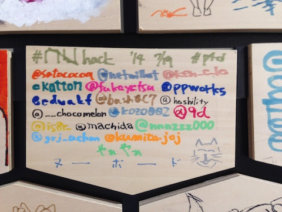

nuhack を開催した

7/19(土) に #nuhack というハッカソンイベントを開催 & 参加しました。
#nuhack とは
P4D の主催する 3回目のハッカソンイベントです。 毎回エンジニアとデザイナをペア (もしくは一部グループ) にして何か作るという形式でやっています。
今回のテーマは「モバイル向けのサービス」でした。
協賛として NUBoard の欧文印刷さんにご協力いただき、 会場はピクシブ株式会社さんにお借りして開催しました。
なぜ NUBoard なのか
寿司屋で @ppworks さんや @ken_c_lo さん達と飲みながら NUBoard 超便利！という話になり、 突然 @ken_c_lo さんが欧文印刷の汲田さん (@kumitajoj) へ熱いリプライを送ったのがきっかけでした。
その後メールで我々 Web に関わる人にとっていかに NUBoard が便利か熱く語り、 さらにはスマホアプリ開発者向け NUBoard のアイディアまで送ったりしました。
そこからいつの間にか「せっかくだから NUBoard を使って開発するハッカソンをやろう」という流れになったのでした。
そんな唐突なご提案にも関わらず、快くご協力いただいた汲田さんには本当に感謝です。
-gramPad
その「スマホアプリ開発者向け NUBoard」である "-gramPad" を早速製品化して汲田さんが持ってきてくださいました
iPhone の形が既に印刷されているので、UI を設計するのに便利です。
裏面が方眼紙になっていたり、余白を多めに確保したページや、 逆に iPhone のフレームを 4 つ配置したページなんかもあります。


当日の様子
当日は前述の gramPad や、他にも単語カードみたいな綴りになった iPhone の形の NUBoard などを使いながら それぞれのペア (グループ) で和気あいあいとした雰囲気で開発をしていました。

僕は @is8r_ さんとともに iPhone のネイティブアプリを作っていました。 写真を撮ると即座に自分の Dropbox にアップロードされる、というシンプルなアプリです。 (NUBoard で書いた図を Mac に転送するのがダルかったので。)
コアな機能は既に出来上がってるのであとは細かいところを詰めればリリースできそうです。 リリースの暁には、ぜひ「NUBoard 公認」の印をもらってリリースしたいなぁと企んでいます。

他のペアもそれぞれ「実際に使ってみたい！」と思えるプロダクトを作っていて、 とても刺激になるハッカソンでした。
ピクシブさんすごい
会場をお借りしたピクシブさんのオフィスがとても素敵でした。 働いている人の気持ちや健康にとても配慮されたオフィスなんだなーと感じました。
そして壁にたくさん飾ってあった pixiv 本がすごかった！
こんなにユーザに愛されるサービス、すごいなぁと思います。尊敬します。
まとめ
欧文印刷さん、ピクシブさん、そして参加してくださったみなさんのおかげで 3連休の初日をとても楽しく過ごす事ができました。
また機会があればハッカソンやりたいですね。
みなさん、おつかれさまでした & ありがとうございました。